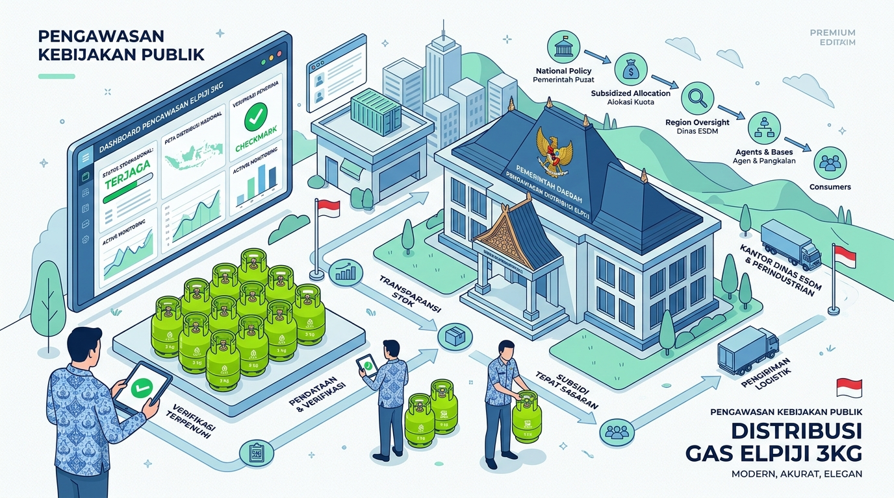

Koordinasi Antarlembaga dalam Pengawasan Distribusi LPG 3 kg Bersubsidi di Kabupaten Kebumen

📌 ABSTRAK
Distribusi LPG 3 kg bersubsidi melibatkan pemerintah daerah, aparat penegak hukum, badan usaha, dan pelaku rantai pasok sehingga koordinasi antarlembaga menjadi penting untuk menjaga ketepatan sasaran, ketersediaan, dan kepatuhan harga. Artikel ini menganalisis bagaimana koordinasi antarlembaga dalam pengawasan distribusi LPG 3 kg bersubsidi di Kabupaten Kebumen berdasarkan dokumen publik.
Penelitian menggunakan pendekatan kualitatif deskriptif dengan studi dokumentasi atas regulasi, publikasi resmi pemerintah daerah pada 2025, catatan tindak lanjut pengaduan pada 2026, dan penelitian terdahulu yang relevan. Data dianalisis secara tematik melalui tiga aspek: lembaga yang terlibat beserta perannya, sistem koordinasi pengawasan di lapangan, serta hambatan dan tindak lanjut pengawasan.
Hasil analisis menunjukkan bahwa pengawasan melibatkan Bupati dan perangkat daerah (DisperindagKUKM, Bagian Perekonomian & SDA, Satpol PP, Kesbangpol), unsur kepolisian dan kejaksaan, Pertamina Patra Niaga, Hiswana Migas, agen, pangkalan, serta masyarakat melalui kanal pengaduan. Koordinasi di lapangan berjalan melalui koordinasi pasokan oleh pimpinan daerah, pemantauan bersama secara berjenjang dari SPBE hingga pangkalan, dan penanganan pengaduan yang ditutup dengan sanksi dari agen. Namun, dokumen juga mencatat perbedaan harga jual antarpangkalan pada Maret 2025 dan penjualan di atas HET pada Agustus 2026. Temuan ini menunjukkan bahwa koordinasi telah berlangsung, tetapi kepatuhan distribusi tetap memerlukan pemantauan berulang, pencatatan tindak lanjut yang konsisten, dan pertukaran informasi yang dapat ditelusuri.
1. Pendahuluan
LPG tabung 3 kg merupakan komoditas bersubsidi yang ditujukan bagi kelompok pengguna tertentu. Karena harga dan distribusinya diatur oleh pemerintah, pengawasan tidak cukup hanya memastikan tabung tersedia di tingkat pangkalan. Pengawasan juga perlu menelusuri apakah LPG disalurkan kepada pengguna yang berhak, dijual sesuai ketentuan harga yang berlaku, dan didistribusikan melalui rantai pasok yang dapat dipertanggungjawabkan.
Kerangka penyediaan dan pendistribusian LPG 3 kg antara lain diatur melalui Peraturan Presiden Nomor 104 Tahun 2007 sebagaimana diubah dengan Perpres Nomor 70 Tahun 2021, serta Peraturan Menteri ESDM Nomor 26 Tahun 2009 yang disempurnakan dengan Permen ESDM Nomor 28 Tahun 2021. Kerangka regulasi tersebut menempatkan distribusi LPG sebagai urusan yang memerlukan keterhubungan antara pembuat kebijakan, pelaksana distribusi, dan pengawas di lapangan.
Tata kelola kolaboratif (Ansell & Gash, 2008) menekankan bahwa keterlibatan lembaga publik dan non-pemerintah harus terhubung dalam proses pengambilan keputusan formal dan konsensus. Di Kebumen, kegiatan lintas instansi tidak cukup dinilai dari hadirnya aktor di lokasi, melainkan bagaimana peran, arus data, dan tindakan korektif dihubungkan secara nyata.
2. Metode Penelitian
Artikel ini menggunakan pendekatan kualitatif deskriptif dengan strategi studi dokumentasi (Bowen, 2009; Creswell & Poth, 2018; Moleong, 2017). Korpus dokumen daerah yang ditelaah mencakup publikasi resmi Pemkab Kebumen (Februari & Maret 2025), laporan pengawasan DisperindagKUKM (Maret & Juni 2025), serta catatan tindak lanjut pengaduan publik LaporBup pada 28–30 Agustus 2026.
Data dianalisis melalui pengodean tematik (Braun & Clarke, 2006, 2022) dalam tiga aspek analisis: pemetaan peran lembaga, tiga alur koordinasi lapangan, serta hambatan dan tindak lanjut korektif.
3. Hasil dan Pembahasan
A. Lembaga yang Terlibat dan Pembagian Perannya
Berdasarkan telaah dokumen, pengawasan distribusi LPG 3 kg di Kabupaten Kebumen melibatkan tiga klaster pemangku kepentingan utama ditambah peran aktif masyarakat:
| Klaster / Unsur | Instansi / Aktor | Peran Utama dalam Pengawasan |
|---|---|---|
| Pemerintah Daerah | Bupati, DisperindagKUKM, Bagian Perekonomian & SDA, Satpol PP, Kesbangpol | Menetapkan arah kebijakan, pemantauan ketersediaan stok di SPBE/agen/pangkalan, edukasi pelaku usaha, dan penindaklanjut aduan. |
| Aparat Penegak Hukum | Polres Kebumen (Satreskrim Ekonomi) & Kejaksaan Negeri Kebumen | Pendampingan preventif, pencegahan penimbunan/penyelewengan subsidi, dan membuka ruang penegakan hukum pidana ekonomi. |
| Badan Usaha & Pasok | PT Pertamina Patra Niaga, Hiswana Migas, Agen, Pangkalan | Menjaga kecukupan pasokan fakultatif, logistik hulu-hilir, pencatatan NIK pembeli, serta penjatuhan sanksi administratif ke pangkalan. |
| Masyarakat | Konsumen Rumah Tangga & Usaha Mikro | Penyampai informasi awal dan pelapor pelanggaran harga melalui kanal pengaduan resmi LaporBup. |
B. Tiga Jalur Koordinasi Pengawasan Lapangan
Koordinasi Pasokan Pimpinan
Koordinasi strategis Bupati bersama Pertamina dan Hiswana Migas. Contoh: usulan tambahan kuota fakultatif sebesar 12% pada Maret 2025 untuk mengantisipasi lonjakan konsumsi Ramadan & Idulfitri.
Inspeksi Berjenjang Hulu-Hilir
Pemantauan serentak dari SPBE (kesiapan tangki & armada truk), Agen (pengiriman alokasi), hingga Pangkalan (pencatatan NIK KTP pembeli & kepatuhan HET).
Penanganan Pengaduan Publik
Respon cepat atas aduan masyarakat di kanal Pemda. Laporan harga di atas HET langsung diverifikasi oleh DisperindagKUKM bersama agen dalam kurun 48 jam.
C. Hambatan Pengawasan dan Respons Korektif
Dokumen resmi mencatat masih adanya ketidakpatuhan harga di tingkat pangkalan:
- Temuan Maret 2025: Ditemukan pangkalan di Desa Adikarso yang menjual Rp19.000/tabung (berbeda dengan pangkalan lain yang menjual Rp18.000). Petugas memberikan edukasi dan menyurati agen penanggung jawab.
- Kasus Aduan Agustus 2026: Warga melaporkan harga Rp25.000/tabung. Hasil verifikasi gabungan DisperindagKUKM dan agen berujung pada pemberian Surat Peringatan I (SP 1) dan sanksi skorsing pasokan selama satu minggu bagi pangkalan pelanggar.
D. 4 Langkah Penguatan Koordinasi (Rekomendasi Kebijakan)
- Standardisasi Format Laporan: Menetapkan instrumen pemantauan terpadu yang memuat temuan faktual, penanggung jawab, tenggat perbaikan, dan bukti pemeriksaan ulang (*re-inspection*).
- Alur Eskalasi Sanksi yang Jelas: Menyepakati tahapan sanksi berjenjang (edukasi, SP 1, skorsing pengiriman, hingga pemutusan hubungan usaha) yang transparan antardinas dan agen.
- Integrasi Data Pengaduan & Jadwal Sidak: Menggunakan rekam jejak aduan masyarakat di LaporBup sebagai basis penentuan peta kerawanan dan lokasi inspeksi berkala.
- Evaluasi Berbasis Efektivitas Penyelesaian: Mengukur keberhasilan pengawasan bukan dari kuantitas kunjungan, melainkan persentase kasus yang terselesaikan dan stabilitas harga riil di masyarakat.
4. Simpulan dan Saran
Koordinasi antarlembaga dalam pengawasan LPG 3 kg di Kebumen telah berjalan efektif pada ranah deteksi dan penanganan responsif. DisperindagKUKM berperan sebagai motor penggerak teknis, sementara agen menjadi jembatan eksekusi sanksi kepada pangkalan yang melanggar.
Untuk menjamin keadilan subsidi energi bagi masyarakat rentan, Pemerintah Kabupaten Kebumen disarankan memperkuat sistem pendataan digital terintegrasi, mengoptimalkan koordinasi berkala dengan aparat penegak hukum, dan melakukan audit kepatuhan rutin pasca-tindakan korektif.
📚 Daftar Pustaka
- Ansell, C., & Gash, A. (2008). Collaborative governance in theory and practice. Journal of Public Administration Research and Theory, 18(4), 543–571.
- Bowen, G. A. (2009). Document analysis as a qualitative research method. Qualitative Research Journal, 9(2), 27–40.
- Braun, V., & Clarke, V. (2006). Using thematic analysis in psychology. Qualitative Research in Psychology, 3(2), 77–101.
- Braun, V., & Clarke, V. (2022). Thematic analysis: A practical guide. SAGE Publications.
- Creswell, J. W., & Poth, C. N. (2018). Qualitative inquiry and research design: Choosing among five approaches (4th ed.). SAGE Publications.
- Dewi, S. R., Nurlaily, & Seroja, T. D. (2023). Pengawasan pendistribusian gas LPG 3 kg bersubsidi di Kota Batam. Jurnal Ilmiah Penegakan Hukum, 10(1), 67–78.
- DisperindagKUKM Kabupaten Kebumen. (2025a, 30 Maret). Meninjau ketersediaan bahan bakar minyak dan LPG 3 kg menjelang Hari Raya Idulfitri 1446 H.
- DisperindagKUKM Kabupaten Kebumen. (2025b, 26 Juni). Monitoring ketersediaan dan kepatuhan terhadap HET LPG 3 kg.
- Febrian, A. T. S., dkk. (2024). Evaluasi program distribusi subsidi LPG 3 kg di Kota Surabaya. PRAJA: Jurnal Ilmiah Pemerintahan, 12(2), 191–201.
- Gafar, M., & Melani. (2024). Efektivitas pengawasan Dinas Perdagangan dalam pendistribusian gas LPG 3 kg di Kelurahan Baru. Jurnal Sektor Publik, 1(1), 59–64.
- Gil-Garcia, J. R., & Sayogo, D. S. (2016). Government inter-organizational information sharing initiatives. Government Information Quarterly, 33(3), 572–582.
- Kementerian ESDM RI. (2009). Peraturan Menteri ESDM Nomor 26 Tahun 2009 jo Permen ESDM Nomor 28 Tahun 2021 tentang Penyediaan dan Pendistribusian LPG.
- Lægreid, P., & Rykkja, L. H. (2022). Accountability and inter-organizational collaboration within the state. Public Management Review, 24(5), 683–703.
- Pemerintah Kabupaten Kebumen. (2025a, 3 Februari). Larangan pengecer jual gas LPG 3 kg sudah berlaku di Kebumen.
- Pemerintah Kabupaten Kebumen. (2025b, 12 Maret). Tinjau pangkalan LPG, Bupati sebut kebutuhan gas jelang Lebaran aman.
- Pemerintah Kabupaten Kebumen. (2026, 30 Agustus). Detail aduan masyarakat mengenai harga LPG di atas HET di pangkalan (kode pelacakan 2600001108).
- Pemerintah Republik Indonesia. (2007). Peraturan Presiden Nomor 104 Tahun 2007 jo Perpres Nomor 70 Tahun 2021.
- Rochman, N. N., Kasim, A., & Atmoko, A. W. (2023). Analysis of governance complexity on subsidized LPG in Indonesia. KnE Social Sciences, 8(5), 36–55.
- Sayogo, D. S., Yuli, S. B. C., & Wiyono, W. (2020). Challenges and critical factors of interagency information sharing in Indonesia. Transforming Government: People, Process and Policy, 14(5), 791–806.
- Siahaan, S. T., dkk. (2025). Bounded rationality in energy policy: Analyzing the ban on retail sales of subsidized 3-kilogram LPG in Indonesia. Journal Governance Bureaucratic Review, 2(2), 118–129.
- Wahyuni, E., Rusli, B., & Candradewini. (2026). Transformation of the 3 kg liquefied petroleum gas (LPG) subsidy policy in Indonesia. Ilomata International Journal of Social Science, 7(3), 862–870.